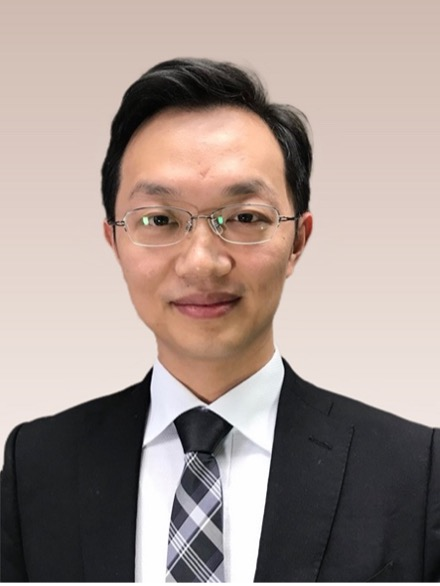

Prof. Xiaochun Cao (SYSU)
Trustworthy Computer Vision Models
Abstract: Computer vision tasks range from the simple perspective projection matrix estimation in a traditional camera calibration application to the large-scale foundation model fitting in a contemporary object detection cloud service. One may solve most computer vision tasks through fitting functions mapping the dense, if not continuous due to quantization, visual input to a discrete and meaningful output space, including categories, bounding boxes, and depths. Due to the significant difference in cardinalities of the domain and codomain, these mapping functions fail to meet one of the three Hadamard criteria for being well-posed. In other words, the unstable computer vision solution does not depend continuously on the parameters or input data. Many researchers are trying their best to design or learn computer vision algorithms being sufficiently robust to complex perturbations such as occlusion, smoke, rain, and fog. There are also scholars looking for dedicated but powerful adversarial perturbations. Does there exist an invariant backdoor perturbation that is capable to push an arbitrary image across the decision boundary in a classification task? Are all perturbations adversarial? Why do the AI models succeed? Fail? In this talk, I will introduce these questions our team is exploring and briefly outline some of the progress. However, much remains unclear in spite of our efforts, and we reiterate that there might not have the answers we're looking for before AI undergoes a brand-new paradigm shift.

Biography: Dr. Xiaochun Cao is the Dean of School of Cyber Science and Technology, Sun Yat-sen University. His research interests include artificial intelligence especially computer vision, and content analysis in cyber space, etc. He received the B.E. and M.E. degrees both in computer science from Beihang University (BUAA), China, and the Ph.D. degree in computer science from the University of Central Florida, USA, with his dissertation nominated for the university level Outstanding Dissertation Award. Before joining SYSU, he was a professor at Institute of Information Engineering, Chinese Academy of Sciences. He has authored and coauthored over 300 journal and conference papers. In 2004 and 2010, he was the recipients of the Piero Zamperoni best student paper award at the International Conference on Pattern Recognition.
Dr. Cao was the recipients of Outstanding Young Scientists Fund and Excellent Young Scientists Fund of National Natural Science Foundation of China, in 2020 and 2014, respectively. He is on the editorial boards of IEEE Transactions on Pattern Analysis and Machine Intelligence, IEEE Transactions on Image Processing, IEEE Transactions on Multimedia, and Acta Electronica Sinica. He was on the editorial board of IEEE Transactions on Circuits and Systems for Video Technology. Four of Prof. Cao's former Ph.D. students, Xiaojie Guo(2013), Changqing Zhang(2016), Xiao wang(2016), and Wenqi Ren(2017), were the recipients of Excellent Young Scientists Fund of National Natural Science Foundation of China or National High-level personnel of special support program. Three of his former Ph.D. students, Wenqi Ren(2017), Ke Ma(2019), Pengwen Dai(2022), were the winners of China Computer Federation (CCF)/Chinese Institute of Electronics(CIE)/Chinese Academy of Sciences(CAS)/ Doctoral Dissertation Awards.
Dr. Yuyang Dong (NEC)
The NEC Large Language Model "Cotomi":
Creating and Operating a Global-Standard Generative AI for Business
Abstract: This talk will introduce NEC cotomi generative AI services with the development of "NEC cotomi Pro" and "NEC cotomi Light," two new high-speed generative AI Large Language Models (LLM) featuring updated training data and architectures. NEC’s newly developed NEC cotomi Pro and NEC cotomi Light are high-speed, high-performance models that deliver the same high performance as global LLMs, but at more than ten times the speed.
Biography: Yuyang Dong is a Principal Researcher at NEC.He earned his Ph.D. degree from the University of Tsukuba in 2019. He specializes in tabular data searching and NLP, with his expertise tabular data processing evidenced by publications in prestigious venues. Dong leads the project [Jellyfish], a leading-edge LLM for tabular data processing that has garnered thousands of monthly downloads on Hugging Face. He is a key contributor to NEC cotomi-core, a suite of robust, self-developed LLMs in both Japanese and English, underpinning NEC’s Generative AI Service.
Dr. Fangzhao Wu (MSRA)
Towards Safe Large Language Models
Abstract: Large Language Models (LLMs) have demonstrated powerful capabilities and are widely used in various applications. Ensuring the safe operation of LLMs is crucial. In this talk, we will discuss several safety risks associated with LLMs, such as jailbreak attacks and indirect prompt injection attacks, and introduce the research efforts aimed at defending against these risks.
Biography: Dr. Fangzhao Wu is now a researcher at Social Computing group, Microsoft Research Asia. His research mainly focuses on responsible AI, especially the safety, privacy, copyright, and social impact of LLMs.
Prof. Peng Li (UoA)
Distributed LLM Learning Systems: from Data Centers to the Edge
Abstract: The recent success of machine learning, especially deep learning, stems from the availability of big data and strong computational power brought by cutting-edge hardware (e.g., GPUs and TPUs). Facing massive computational loads, it is inefficient or sometimes impossible to train models on a single machine, driving attention towards distributed machine learning on multiple machines. This talk reviews the recent research efforts about distributed systems for machine learning. It starts from data centers, and present concepts and motivations of distributed machine learning, paying special attention on machine learning job scheduling on heterogeneous GPUs. Then, it walks out of data centers to show how to extend the distributed machine learning ideas to edge devices. Finally, it presents new challenges of training distributed unstructured data, graphs, and possible solutions.

Biography: Dr. Peng Li is a Senior Associate Professor in the University of Aizu, Japan. His research interests mainly focus on wired/wireless networking, cloud/edge computing, distributed AI systems, and blockchain. Dr. Li has authored or co-authored over 100 papers in major conferences and journals. He won the Young Author Award of IEEE Computer Society Japan Chapter in 2014, the Best Paper Award of IEEE TrustCom 2016 and the Best Paper Award of IEEE Communication Society Big Data Technical Committee in 2019. He supervised students to win the First Prize of IEEE ComSoc Student Competition in 2016. Dr. Li won the 2020 Best Paper Award of IEEE Transactions on Computers. He serves as the chair of SIG on Green Computing and Data Processing in IEEE ComSoc Green Communications and Computing Technical Committee. Dr. Li is the guest editor of IEEE Journal of Selected Areas on Communications, the editor of IEEE Open Journal of the Computer Society, and IEICE Transactions on Communications. He is a senior member of IEEE.
Dr. Yongjun Zhao (TikTok)
Challenges in Privacy and Security of Generative AI Models
Abstract: Large models have demonstrated unprecedented success in many applications in the past few years. Meanwhile, the research advancement of foundation models is accompanied by a surge of attention to its privacy and security implications. The pursuit of this research direction is for theoretical interest, but is in fact a pressing need as several real life attacks on commercialized products have been successfully demonstrated. In this talk, I will give an overview of the major challenges in deploying large models in a privacy-preserving and security-respecting manner. We will also discuss how privacy-enhancing technologies could help in mitigating these emerging challenges.
Biography: Dr. Yongjun Zhao received his Ph.D degree from Chinese University of Hong Kong. He is now a research scientist at TikTok working on the theories and practices of privacy-enhancing technologies. He has published in top-tier conferences and journals including AAAI, NDSS, PKC, PoPETs, IEEE-TIFS, IEEE-TDSC, IEEE-IOTJ. His main research interests are applied cryptography, privacy-enhancing technologies, and blockchain. Dr. Zhao has served on the program committees of many conferences, including PoPETs, CANS, InsCrypt, SECRYPT, SCC, and SecureComm. Prior to joining TikTok, he was a senior research fellow at Strategic Centre for Research in Privacy-Preserving Technologies & Systems (SCRIPTS), Nanyang Technological University.
| Time |
Speaker |
Title |
| 9:00 - 9:30 |
Yang Cao |
Opening; self-introduction by everyone |
| 9:30 - 10:30 |
Prof. Xiaochun Cao @SYSU |
Trustworthy Computer Vision Models |
| 10:30 - 11:00 |
— |
☕️Coffee Break (30m) |
| 11:00 - 12:00 |
Dr. Yuyang Dong @NEC |
The NEC Large Language Model "Cotomi", Creating and Operating a Global-Standard Generative AI for Business Applications |
| 12:00 - 13:30 |
— |
üç±Lunch & Break (1.5h) |
| 13:30 - 14:30 |
Dr. Fangzhao Wu @MSRA |
Towards Safe Large Language Models |
| 14:30 - 15:30 |
Dr. Peng Li @UoA |
Distributed LLM Learning Systems: From Data Centers to the Edge |
| 15:30 - 16:00 |
— |
☕️Coffee Break (30m) |
| 16:30 - 17:30 |
Dr. Yongjun Zhao @TikTok |
Challenges in Privacy and Security of Generative AI Models |
| 17:30 - 18:00 |
Everyone |
Short panel discussion
1. Which talk(s) are most relevant to your current research, or interest you the most?
2. Please provide comment(s) or ask questions(s) to that/these talk(s) |
| 18:30 - 19:30 |
Everyone |
üçΩDinner at „ŧ„Å∞„ÇÅ„Éõ„ɺ„É´ |
| 19:30 - 20:30 |
Everyone |
Free Discussion |
This event is free to attend. However, there will be a participant fee for those who wish to attend the welcome party.
For more information, please contact
cao@c.titech.ac.jp.